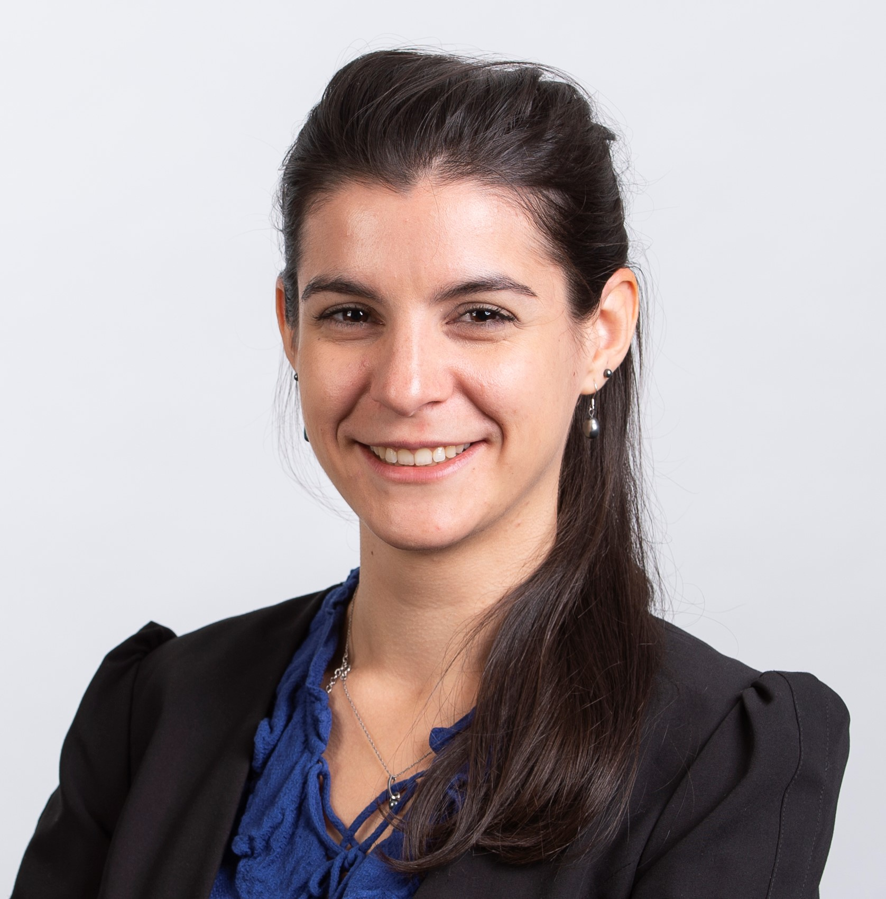

| 9:30-9:35 |
Welcome |
| 9:35-10:20 |
|
|
Professor Jinchang Ren, National Subsea Centre
Multimodal Sensing and Machine Learning for Effective Remote Sensing Earth Observation and Industrial Automation
Machine learning enabled smart multimodal sensing is essential for effective remote sensing earth observation, which includes not only conventional cameras but also SAR, LiDAR, thermal, multispectral and even hyperspectral imaging. These can be particularly useful for more accurate, timely and cost-effective sensing and mapping of the earth as well as condition monitoring and non-destructive inspection of the environment and industrial automation. In this talk, related work will be presented, covering from land mapping, change detection, precision agriculture and natural disaster assessment to subsea infrastructure inspection, ocean colour remote sensing and arctic sea ice segmentation as well as a few industrial automation applications. Multimodal image fusion enabled big data analytics are focused, driven by advanced image processing, computer vision and AI machine learning techniques.
Bio
Jinchang Ren received his B. Eng. degree in computer software, M.Eng. in image processing, and D. Eng. in computer vision, all from Northwestern Polytechnical University, Xi'an, China. He was also awarded a Ph.D. degree in Electronic Imaging and Media Communication from the University of Bradford, Bradford, U.K. Currently he is a full Professor of Computing Sciences, Transparent Ocean Lead, and Director of the Hyperspectral Imaging Lab at the National Subsea Centre (NSC), Robert Gordon University, Aberdeen, U.K. Dr. Ren is a Senior Member of IEEE. His research interests focus mainly on hyperspectral imaging, image processing, computer vision, big data analytics and machine learning. He has published 350+ peer reviewed journal/conferences articles, and acts as an Associate Editor for several international journals including IEEE TGRS and J. of the Franklin Institute et al. He has also chaired and co-chaired a number of conferences and workshops. His students have received many awards, including the Best PhD thesis from IET Image and Vision Section and various conferences/workshops.
|
|
| 10:20-11:20 |
|

|
Charlotte Pelletier, Univ. Bretagne Sud, Vannes, France
Domain adaptation for satellite image time series
The recent developments of deep learning models have significantly improved the classification of satellite image time series (SITS), specifically for land cover mapping and crop-type identification applications. To capture complex temporal patterns like crop phenology, these approaches require a large quantity of correctly labelled data, which may not always be readily accessible in the region of interest or at a given period. One solution is to train a model in a source domain where labels are available and then apply it to the unlabelled target domain. However, when the two domains correspond to geographically or temporally distant regions, the source-trained model might perform poorly when applied to the target domain. The discrepancy arises from the dissimilarity between the source and target data distributions caused by variations in local conditions, such as soil, climate, or farmer practices, which lead to spectral and temporal shifts between the two domains. To mitigate this issue, a range of methods have been developed in recent years, known as unsupervised domain adaptation (UDA) when no target labelled data are available, or semi-supervised domain adaptation (SSDA) when a small amount of labels is accessible. However, these techniques do not account for SITS specificities and do not learn explicitly the temporal shift of SITS when dealing with two geographical areas or do not benefit from the temporal dimension for the same region at a different time, and thus provide only limited benefits for downstream tasks. In this talk, I will introduce recent works on UDA and SSDA that have proven their efficiency in improving SITS classification. In particular, I will present TimeMatch and Match-And-Deform (MAD), two novel UDA techniques tailored for SITS that directly address the temporal shift issue. TimeMatch combines a temporal shift estimation with a semi-supervised learning framework to adapt a model to the unlabelled target region, while MAD leverages optimal transport with dynamic time warping to perform time series matching and timestamp alignment. Both approaches, tested on the TimeMatch dataset, have shown improved performance compared to the state-of-the-art deep time series domain adaptation techniques.
Bio
Charlotte Pelletier is an associate professor in computer science at Univ. Bretagne Sud, Vannes, France. She conducts her research at the Research Institute in information technology and random systems (IRISA) in the Obelix team on the development of new accurate and scalable time-series classification algorithms and time-series domain adaptation techniques for Earth Observation data. Her research interests also include data fusion, super-resolution, processing of mislabelled data, and gap-filling. Since 2022, she has chaired a working group on temporal geospatial data understanding (ISPRS TCII/WG5). Since 2019, she has also co-chaired a technical committee on remote sensing and mapping (IAPR TC7). She co-leads the geodata science track within the Erasmus Mundus Joint Master Degree (EMJMD) named Master Copernicus in Digital Earth.
|
|
| 11:20-11:40 |
Tea Break |
| 11:40-12:00 |
An a contrario approach for plant disease detection
Rebecca Leygonie (Université Paris Cité), Sylvain Lobry (Université Paris Cité), Laurent Wendling (Université de Paris)
Detecting plant diseases or abnormalities is not a trivial task, as they can be caused by multiple factors such as environmental conditions, genetics, pathogens, etc. Because there is a need to help farmers make decisions to maximize crop yields, many studies have emerged in recent years using deep learning on agricultural images to detect plant diseases, which can be considered as an anomaly detection task. However, these approaches are often limited by the availability of annotated data or prior knowledge of the existence of an anomaly. We propose an approach that can detect part of the anomalies without prior knowledge of their existence, thus overcoming some of these limitations. To this end, we train a model on an auxiliary prediction task (plants' age regression). We then use an explicability model to retrieve heatmaps whose distributions are studied. For each new observation, we propose to study how closely its heatmap follows the desired distribution and we derive a score indicating potential anomalies. Experiments on the GrowliFlower dataset indicate how our proposed method can help potential end-user to automatically find anomalies.
|
| 12:00-12:20 |
Multi-task prompt-RSVQA to explicitly count objects on aerial images
Christel Chappuis (EPFL), Charlotte Sertic (EPFL), Nicola Santacroce (EPFL), Javiera Castillo Navarro (EPFL), Sylvain Lobry (Université Paris Cité), Bertrand Le Saux (European Space Agency (ESA)), Devis Tuia (EPFL)
Introduced to enable a wider use of Earth Observation images using natural language, Remote Sensing Visual Question Answering (RSVQA) remains a challenging task, in particular for questions related to counting. To address this specific challenge, we propose a modular Multi-task prompt-RSVQA model based on object detection and question answering modules. By creating a semantic bottleneck describing the image and providing a visual answer, our model allows users to assess the visual grounding of the answer and better interpret the prediction. A set of ablation studies are designed to consider the contributions of different modules and evaluation metrics are discussed for a finer-grained assessment. Experiments demonstrate competitive results against literature baselines and a zero-shot VQA model. In particular, our proposed model predicts answers for numerical Counting questions that are consistently closer in distance to the ground truth.
|
| 12:20-12:40 |
Contrastive Maximum Mean Discrepancy for Unsupervised Domain Adaptation Applied to Large Scale 3D LiDAR Semantic Segmentation
Lamiae El Mendili (Université Laval), Sylvie Daniel (Université Laval), Thierry Badard (Université Laval / CRDIG), Patrick Dallaire (Université Laval)
Semantic segmentation of 3D LiDAR point clouds is very important for applications like autonomous driving and digital twins of cities. However, current deep learning models suffer from a significant generalization gap. Unsupervised Domain Adaptation (UDA) methods have recently emerged to tackle this issue. While domain invariant feature learning using maximum mean discrepancy (MMD) has shown promise in image domains due to its simplicity, its application remains unexplored in large-scale outdoor point clouds. Moreover, previous methods don't consider the class information, which can lead to suboptimal adaptation performance. In response, we propose a new approach—Contrastive Maximum Mean Discrepancy (CMMD)— to maximize intra-class domain alignment and minimize inter-class domain discrepancy. We integrate CMMD into a 3D semantic segmentation model for LiDAR point clouds. The evaluation of our method with large-scale UDA datasets shows that it surpasses several state-of-the-art UDA approaches for 3D LiDAR point clouds while being competitive with the current best-performing approach. CMMD is a promising UDA approach with strong potential for point cloud semantic segmentation.
|
| 12:40-13:00 |
Computer Vision Pipeline for Automated Antarctic Krill Analysis
Mazvydas Gudelis (UEA), Michal Mackiewicz (University of East Anglia), Sophie Fielding (British Antarctic Survey), Julie Bremner (University of East Anglia)
British Antarctic Survey (BAS) researchers launch annual expeditions to the Antarctic in order to estimate Antarctic Krill biomass and assess the change from previous years. These comparisons provide insight into the effects of the current environment on this key component of the marine food chain. In this work we have developed tools for automating the data collection and analysis process, using web-based image annotation tools and deep learning image classification and regression models. We achieve highly accurate krill instance segmentation results with an average 77.28% AP score, as well as separate maturity stage and length estimation of krill specimens with 62.99% accuracy and a 1.98 mm length error respectively.
|
| 13:00-14:10 |
Lunch |
| 14:10-15:10 |

|
Bertrand Le Saux, European Space Agency
Next-Generation(s) Machine Learning for Earth Observation
The last decade has witnessed a profound transformation in Earth Observation (EO) through the deep learning revolution, with Artificial Intelligence (AI) being increasingly employed to tackle various EO challenges. However, the unique characteristics of EO data, which are in fine geospatial measurements from diverse sensors, and the intricate nature of underlying physical processes (originating in the Earth system, weather and climate, or human activities), pose significant obstacles. As a result, progress in adopting machine learning techniques varies across applications, and the full potential of these methods remains untapped. This presentation will provide an overview of the past decade's advancements, current status, and challenges in using machine learning for EO, followed by insights into the next stage of the ongoing machine learning revolution, including foundational models and their implications. It will also delve into the future of EO, exploring the emergence of quantum machine learning and quantum computing for EO, as well as the potential of EO processing in modular high-performance computing (HPC) environments.
Bio
Bertrand Le Saux is a Senior Scientist with the European Space Agency Φ-lab in Frascati, Italy. His research aims at visual understanding of the environment by data-driven techniques including computer vision and (quantum) machine learning. He is interested in tackling practical problems that arise in Earth observation, to bring solutions to current environment and society challenges. He received the Ms.Eng. and M.Sc. degrees from Institut National Polytechnique, Grenoble, France, in 1999, the Ph.D. degree from the University of Versailles/Inria, Versailles, France, in 2003, and the Dr. Habilitation degree from the University of Paris-Saclay, Saclay, France, in 2019. Dr. Le Saux was Co-Chair (2015–2017) and chair (2017–2019) for the IEEE GRSS Technical Committee on Image Analysis and Data Fusion. He is an Associate Editor of the Geoscience and Remote Sensing Letters. He co-organises many workshops and events in machine learning x Earth observation, notably the CVPR Earth Vision workshop series (including this year at CVPR’2023), the ESA - ECMWF workshop series on Machine Learning for Earth System Observation and Prediction, and the Humanitarian Assistance and Disaster Response (HADR) workshop at ICCV'2023.
|
|
| 15:10-15:50 |
Challenge Results |
| 15:50-16:00 |
Closing |